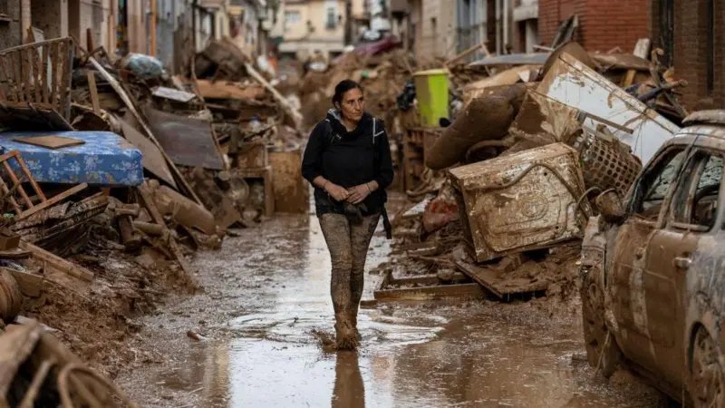

Catástrofes Naturalesen 2024



Apúntate cómo voluntario
Tu ayuda es fundamental para apoyar a las personas afectadas por las catástrofes naturales.
Contactos de Emergencia
Aquí puedes encontrar los números de emergencia en caso de que necesites ayuda inmediata durante una catástrofe natural.
Policía
911
Bomberos
112
Ambulancias
061